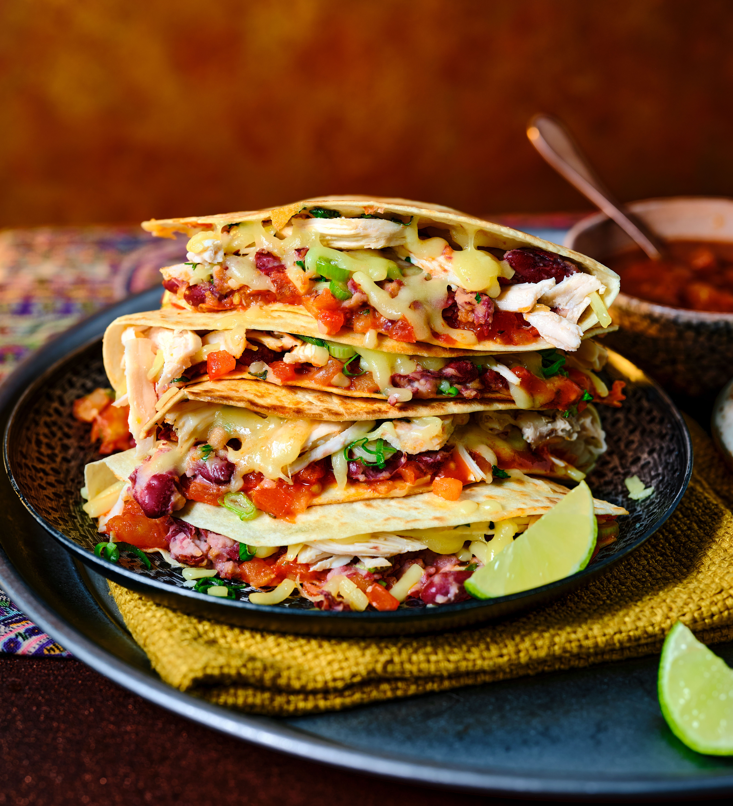

Home
Quesadillas

Description
Quesadillas are a popular Mexican dish made by filling a flour or corn tortilla with cheese and optional ingredients like chicken, beef,
vegetables, or beans, then folding and cooking it until the tortilla is crispy and the cheese is melted. They are often served with salsa, sour cream, or guacamole.
Ingredients:
- 2 cooked chicken breasts, shredded or diced (about 400–500 g)
- 2 cups grated cheese (cheddar, mozzarella, Monterey Jack, or Mexican blend)
- 1 small onion, finely diced (optional)
- 1 capsicum (bell pepper), sliced (optional)
- 1 tsp paprika
- 1 tsp cumin
- Salt and pepper to taste
- 8 medium flour tortillas
- 1 tbsp butter or oil for cooking
- Sour cream
- Guacamole or sliced avocado
- Salsa
- Fresh coriander
- Jalapeños
Method:
- If using onion and capsicum, cook them in a little oil for 4–5 minutes until softened. Add the cooked chicken, paprika, cumin, salt, and pepper. Heat through.
- Assemble
- Heat a large frying pan over medium heat.
- Lightly butter one side of a tortilla.
- Place it butter-side down in the pan.
- Sprinkle cheese over half the tortilla.
- Add the chicken mixture.
- Top with a little more cheese.
- Fold the tortilla in half.
- Cook for 2–3 minutes until golden. Carefully flip and cook the other side for another 2–3 minutes, until the cheese has melted.
- Let it rest for a minute. Cut into wedges and serve with sour cream, guacamole, and salsa.